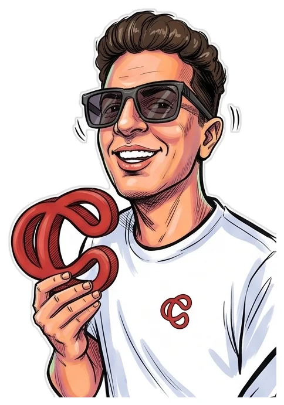

The full storyالحكاية كاملة
From a 14-year-old with Photoshop to one systemمن طفل عنده 14 سنة وفوتوشوب لـ نظام واحد
14It started at 14بدأت وعندي 14 سنة
I started learning Photoshop and Illustrator when I was 14 — it wasn't a passing hobby, it was the first thing I actually took seriously. Not long after, I taught myself to code and moved into building websites and apps, and spent years freelancing across both — design and development, side by side, never one far from the other.بدأت أتعلم فوتوشوب وإلستريتور وأنا عندي 14 سنة بس — مكانتش هواية بتعدي، كانت أول حاجة حسّيت إني بجد فيها فعلاً. وبعدها بفترة اتعلمت البرمجة، ودخلت في تطوير مواقع الويب والتطبيقات، واشتغلت فريلانسر لسنين طويلة على الاتنين مع بعض — تصميم وبرمجة جنب بعض، مش الواحد بعيد عن التاني.
02Costa Studio, and the AI waveكوستا استوديو وموجة الذكاء الاصطناعي
After years of freelancing, I decided to open my own company: Costa Studio. When the AI wave started, I didn't just watch it from the sidelines — I spent a year, two years, studying it seriously and testing every tool on the market on my own work and on real client projects, until I knew exactly what each one was good for and where it broke.بعد سنين الفريلانس قررت أفتح شركتي الخاصة: كوستا ستوديو. ولما موجة الذكاء الاصطناعي بدأت، مقعدتش أتفرج عليها من بعيد — قعدت سنة وسنتين أدرسها بجدية وأجرب كل أداة موجودة في السوق على شغلي الشخصي وعلى مشاريع عملاء حقيقيين، لحد ما عرفت بالظبط كل أداة بتنفع في إيه وبتفشل فين.
03Two systems came out of itخرجت من التجربة دي بنظامين
Two systems came out of that. The first is Costa Code — it holds every AI tool you need to build websites and apps and run brands on full automation. The second is Costa Studio's own content engine — over 60 tools for generating images, video, and audio, trained on each brand's exact style and identity.من التجربة دي طلعت بنظامين. الأول اسمه Costa Code — فيه كل أدوات الذكاء الاصطناعي اللي محتاجها عشان تبني مواقع وتطبيقات وتدير براندات بأتمتة كاملة. والتاني هو محرك المحتوى بتاع كوستا ستوديو نفسه — فيه أكتر من 60 أداة لتوليد الصور والفيديوهات والصوت، ومدرّبة على أسلوب وهوية كل براند بالظبط.
04One system, one personنظام واحد وشخص واحد
That's when I decided to turn Costa Studio into a real company — not just to sell design, but to hand these systems to people and solve their problems, from the identity to the website to the marketing, all inside one professional automation system that runs in your place — instead of chasing four or five different people, there's one system, and one person running it. I've actually run these systems on real brands, and tested them before offering them to anyone else.من هنا قررت أفتح كوستا ستوديو كشركة بجد — مش عشان أبيع خدمة تصميم بس، لكن عشان أدّي الأنظمة دي للناس وأحل مشاكلهم من أول الهوية البصرية لحد الموقع والتسويق وكل حاجة، في نظام أتمتة احترافي واحد بيشتغل مكانك — بدل ما تدور على أربعة أو خمسة أشخاص مختلفين، في واحد بس بيدير النظام كله. ونفّذت الأنظمة دي فعلاً على براندات حقيقية كتير، جربتها عليهم قبل ما أقدّمها لأي حد تاني.
10+years in design & codeسنين في التصميم والبرمجة
2years specialised in AIسنة تخصص في الذكاء الاصطناعي
20+AI tools in active useأداة AI شغال عليها
1system that unites them allنظام واحد بيجمعهم كلهم
“I don't just design nice things. I build the system that keeps the brand running after I hand it over.أنا مش بصمم حاجات حلوة وخلاص. أنا ببني النظام اللي بيخلي البراند شغال بعد ما أسلّم.
— Mazen Costa, Founder & Creative Director — Costa Studio— مازن كوستا، المؤسس والمدير الإبداعي — كوستا ستوديو
Instead of me telling you more, go through the portfolio and judge for yourself.وبدل ما أقولّك كلام كتير، ادخل البورتفوليو واحكم بنفسك.